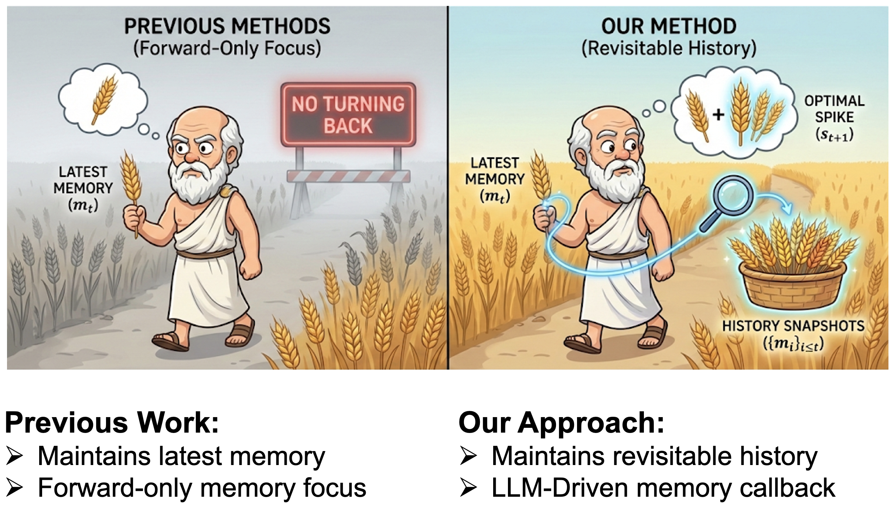
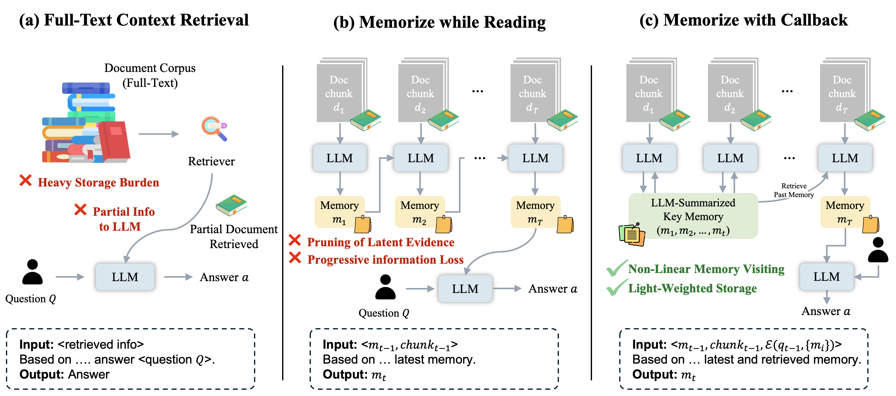
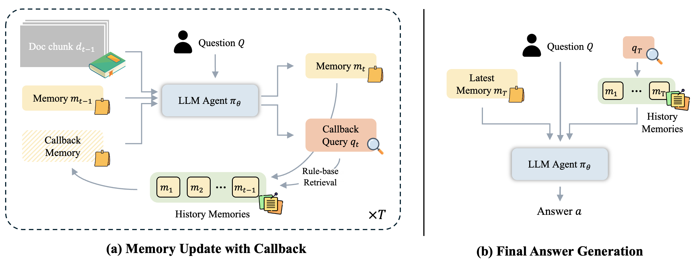
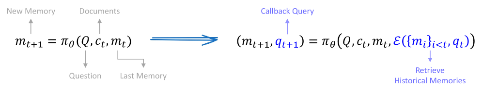
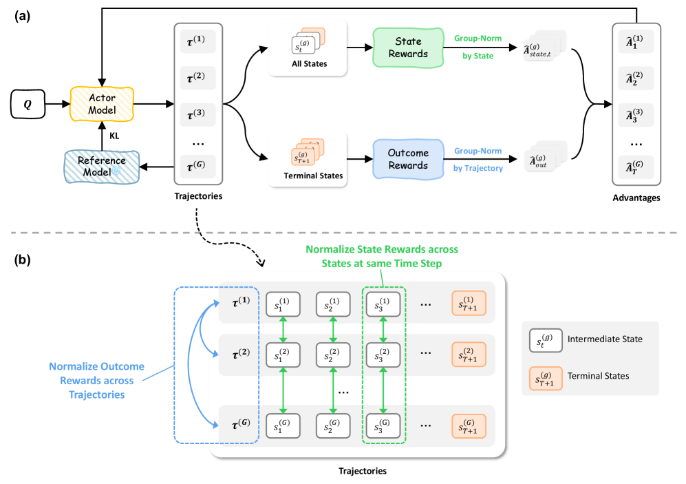
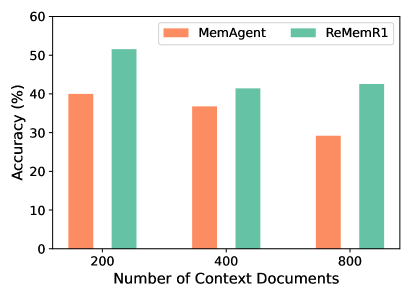
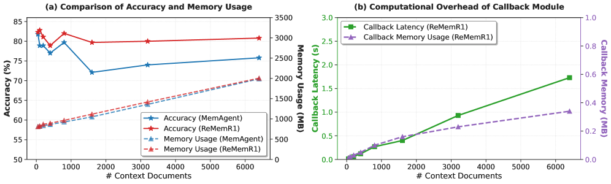
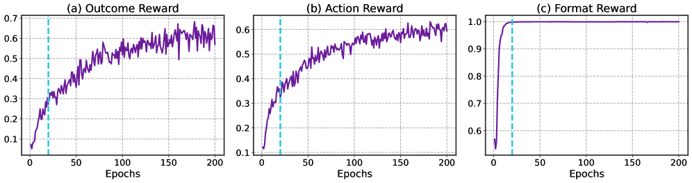

Large language models face challenges in long-context question answering, where key evidence of a query may be dispersed across millions of tokens. Existing works equip large language models with a memory buffer that is dynamically updated via a linear document scan, also known as the "memorize while reading" methods. While this approach scales efficiently, it suffers from pruning of latent evidence, information loss through overwriting, and sparse reinforcement learning signals. To tackle these challenges, we present ReMemR1, which integrates the mechanism of memory retrieval into the memory update process, enabling the agent to selectively callback historical memories for non-linear reasoning. To further strengthen training, we propose a multi-level reward design, which combines final-answer rewards with dense, step-level signals that guide effective memory use. Together, these contributions mitigate information degradation, improve supervision, and support complex multi-hop reasoning. Extensive experiments demonstrate that ReMemR1 significantly outperforms state-of-the-art baselines on long-context question answering while incurring negligible computational overhead.


Current memory-augmented approaches for long-context QA face key limitations:
ReMemR1 addresses both challenges with: (1) a callback mechanism that enables non-linear memory revisiting over past details, and (2) a multi-level reward design combining outcome rewards with dense step-level supervision.

Unlike conventional memory agents that use a restrictive state where each memory update only depends on the current context and previous memory, ReMemR1 augments the state representation with a callback query. At each time step, the agent:

(Left) Conventional memory agents use a restrictive state st = mt, where the next memory only depends on the current context and memory. (Right) Our method represents states as st = (mt, qt), where the agent generates a callback query to retrieve relevant information from its entire memory history, enabling non-linear reasoning paths.

ReMemR1 employs a multi-level reward design that combines:
ReMemR1 was evaluated on long-context QA benchmarks with context lengths ranging from 100 to 6400 documents, using HotpotQA (in-distribution) and 2WikiMultiHopQA (out-of-distribution):
| Scale | Method | Avg | 100 | 200 | 400 | 800 | 1600 | 3200 | 6400 |
|---|---|---|---|---|---|---|---|---|---|
| 3B | MemAgent | 60.9 | 70.3 | 69.4 | 68.8 | 60.9 | 60.2 | 59.4 | 58.8 |
| ReMemR1 (Ours) | 63.8 | 70.9 | 71.7 | 74.0 | 65.4 | 65.0 | 65.4 | 66.1 | |
| 7B+ | R1-Distill-7B | 10.2 | 40.6 | 25.8 | 0.8 | 1.6 | 2.3 | 1.5 | 3.1 |
| Qwen2.5-1M-7B | 54.7 | 75.8 | 71.9 | 68.0 | 67.2 | 69.5 | 22.7 | 0.0 | |
| QwenLong-L1-32B | 57.8 | 83.6 | 85.2 | 74.2 | 73.4 | 57.8 | 38.9 | 38.3 | |
| MemAgent-7B | 74.0 | 81.8 | 78.9 | 78.9 | 77.0 | 79.7 | 72.1 | 75.8 | |
| ReMemR1-7B (Ours) | 81.1 | 82.3 | 82.8 | 78.9 | 82.0 | 79.7 | 80.0 | 80.8 |
| Scale | Method | Avg | 100 | 200 | 400 | 800 | 1600 | 3200 | 6400 |
|---|---|---|---|---|---|---|---|---|---|
| 3B | MemAgent | 40.2 | 41.4 | 45.3 | 39.4 | 36.3 | 28.9 | 26.7 | 25.9 |
| ReMemR1 (Ours) | 42.5 | 53.5 | 50.4 | 41.7 | 37.0 | 36.2 | 35.4 | 37.8 | |
| 7B+ | R1-Distill-7B | 25.8 | 36.7 | 29.7 | 0.0 | 0.8 | 2.3 | 2.3 | 0.8 |
| Qwen2.5-1M-7B | 45.3 | 62.5 | 59.4 | 57.8 | 47.7 | 46.1 | 25.8 | 0.0 | |
| QwenLong-L1-32B | 45.3 | 74.2 | 69.5 | 65.6 | 58.6 | 38.3 | 24.6 | 29.9 | |
| MemAgent-7B | 50.8 | 61.7 | 57.8 | 47.6 | 50.7 | 44.5 | 46.9 | 44.7 | |
| ReMemR1-7B (Ours) | 55.6 | 63.9 | 63.1 | 54.5 | 54.7 | 45.4 | 48.9 | 50.3 |
Key findings:

When key evidence pieces are placed far apart in the document, ReMemR1's callback mechanism proves especially effective. The accuracy gap between ReMemR1 and baselines widens as the evidence distance increases, demonstrating its robustness to scattered information.

ReMemR1 consistently achieves higher accuracy with only modest additional computation. The callback retrieval module introduces less than 0.1% additional time and negligible memory overhead (<0.001% of total memory), making it highly practical for real-world long-context scenarios.

Training dynamics: ReMemR1 quickly learns the callback format requirements under RL guidance, with performance rapidly improving during the first 20 steps.
@article{rememr1,
author = {Yaorui Shi and
Yuxin Chen and
Siyuan Wang and
Sihang Li and
Hengxing Cai and
Qi Gu and
Xiang Wang and
An Zhang},
title = {Look Back to Reason Forward: Revisitable Memory for Long-Context {LLM}
Agents},
journal = {CoRR},
volume = {abs/2509.23040},
year = {2025},
eprinttype = {arXiv},
eprint = {2509.23040},
}